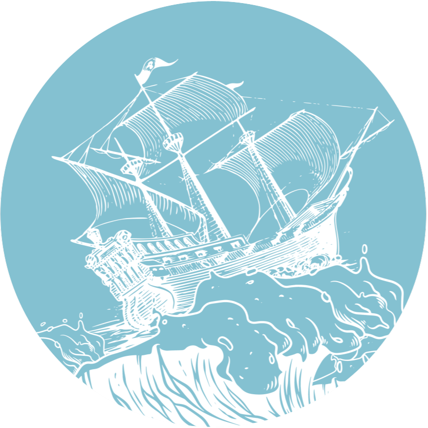
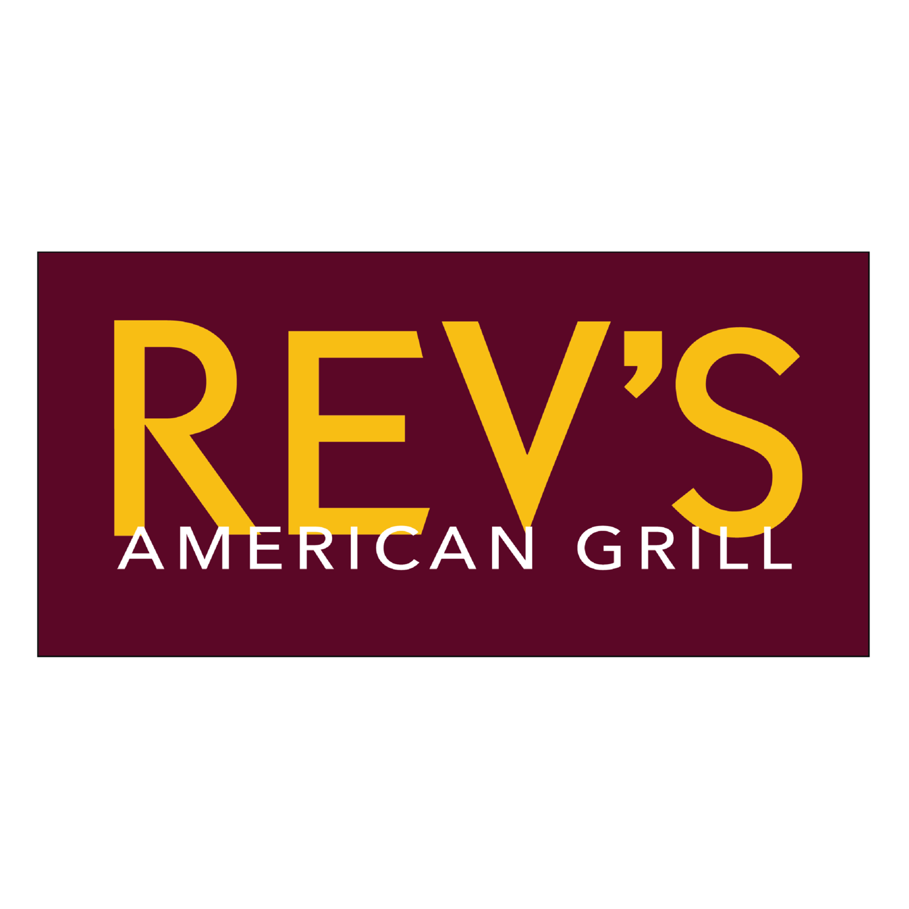

Projects
Showcase of my project highlights.
I created this website from scratch using HTML, CSS, and JavaScript. It was made to display my work experience and some of my projects.

For my capstone project, my group and I developed an immersive virtual reality social app. In it, users are able to create lobbies and join others to talk, hang out, and share photos. This was created in Unity, with scripts coded in C#. The APIs implemented in this project include the Google Photos API for photo uploading and sharing, the Unity Relay API to allow for multiplayer, and the Vivox API to allow voice chat.
A coding project that I have completed is a Discord Bot. This bot takes in user commands and uses APIs to respond to the command. One of these commands is called "lookup," and it uses the Google Search API to conduct a search on a user given query. From this, it replies with the top 5 links corresponding with the query. Another command that involves APIs is the "r" command. This command uses the Reddit API to automatically get a post from the meme subreddit and sends it to the channel, but it can also take an optional input from the user that specifies the subreddit.
Another project I have completed is an automator for League of Legends. This program allows the user to automatically acccept a match with the click of a button. The user can also input a champion name to automatically select or ban a champion as well. This program uses the PyAutoGUI API to detect images on the screen and once it finds a match, it will move the mouse over and select the object. If the user wants to select or ban a champion, it will use the API to first type the champion's name in the search box and then to carry out the task.

This project is a point of sales system made for the restaurant, Rev's American Grill. It works with a MySQL database in order to keep track of inventory, orders, and menu items. It also included a login feature using OAuth to separate between a customer, server, and manager. The customer interface included accessibility features such as Google Translate, narration, font size adjustment, and an embedded Google Maps block as well. I worked on a team with four other students to create this system utilitizing the Agile methodology and a GitHub repository for collaboration and version control.
These projects can be found on GitHub by clicking the images or going to my profile.
My professional profile is hosted on LinkedIn and can be found here.